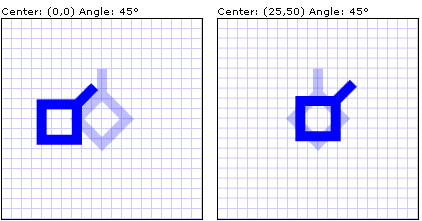

Обзор фигур и базовых средств рисования в приложении WPF
В этом разделе приводится обзор рисования с помощью Shape объектов. Объект Shape — это разновидность UIElement , позволяет нарисовать фигуру на экране. Так как они являются элементами пользовательского интерфейса, Shape объекты могут использоваться внутри Panel элементы и элементы управления.
Windows Presentation Foundation (WPF) предоставляет несколько уровней доступа к графикой и службам рендеринга. На верхнем уровне Shape объекты просты в использовании и предоставляют множество полезных функций, таких как макет и участие в Windows Presentation Foundation (WPF) системой событий.
Объекты фигур
WPF предоставляет ряд готовых к использованию Shape объектов. Все объекты фигур наследуются от Shape класса. Доступные объекты фигур включают Ellipse, Line, Path, Polygon, Polyline, и Rectangle. Shape объекты используют перечисленные ниже общие свойства.
Stroke: Описывает способ рисования контура фигуры.
StrokeThickness: Определяет толщину контура фигуры.
Fill: Описывает способ рисования внутренней части фигуры.
Свойства данных, определяющие координаты и вершины, измеряются в аппаратно-независимых пикселях.
Так как они являются производными от UIElement, объекты фигур можно использовать внутри панелей и большинства элементов управления. Canvas Панели особенно хорошо подходит для создания сложных рисунков, так как она поддерживает абсолютное позиционирование дочерних объектов.
Line Класс позволяет нарисовать линию между двумя точками. В следующем примере показано несколько способов указания координат линии и свойств штриха.
<Canvas Height="300" Width="300">
<!-- Draws a diagonal line from (10,10) to (50,50). -->
<Line
X1="10" Y1="10"
X2="50" Y2="50"
Stroke="Black"
StrokeThickness="4" />
<!-- Draws a diagonal line from (10,10) to (50,50)
and moves it 100 pixels to the right. -->
<Line
X1="10" Y1="10"
X2="50" Y2="50"
StrokeThickness="4"
Canvas.Left="100">
<Line.Stroke>
<RadialGradientBrush GradientOrigin="0.5,0.5" Center="0.5,0.5" RadiusX="0.5" RadiusY="0.5">
<RadialGradientBrush.GradientStops>
<GradientStop Color="Red" Offset="0" />
<GradientStop Color="Blue" Offset="0.25" />
</RadialGradientBrush.GradientStops>
</RadialGradientBrush>
</Line.Stroke>
</Line>
<!-- Draws a horizontal line from (10,60) to (150,60). -->
<Line
X1="10" Y1="60"
X2="150" Y2="60"
Stroke="Black"
StrokeThickness="4"/>
</Canvas>
Warning
It looks like the sample you are looking for does not exist.
// Add a Line Element
myLine = new Line();
myLine.Stroke = System.Windows.Media.Brushes.LightSteelBlue;
myLine.X1 = 1;
myLine.X2 = 50;
myLine.Y1 = 1;
myLine.Y2 = 50;
myLine.HorizontalAlignment = HorizontalAlignment.Left;
myLine.VerticalAlignment = VerticalAlignment.Center;
myLine.StrokeThickness = 2;
myGrid.Children.Add(myLine);
Warning
It looks like the sample you are looking for does not exist.
На следующем рисунке показано создаваемые Line.
Несмотря на то что Line предоставляют Fill , его установка не оказывает никакого влияния поскольку Line нет области.
Еще одна распространенная фигура — Ellipse. Создание Ellipse путем определения фигуры Width и Height свойства. Чтобы нарисовать круг, укажите Ellipse которого Width и Height значения равны.
<Ellipse
Fill="Yellow"
Height="100"
Width="200"
StrokeThickness="2"
Stroke="Black"/>
using System;
using System.Windows;
using System.Windows.Controls;
using System.Windows.Media;
using System.Windows.Shapes;
namespace SDKSample
{
public partial class SetBackgroundColorOfShapeExample : Page
{
public SetBackgroundColorOfShapeExample()
{
// Create a StackPanel to contain the shape.
StackPanel myStackPanel = new StackPanel();
// Create a red Ellipse.
Ellipse myEllipse = new Ellipse();
// Create a SolidColorBrush with a red color to fill the
// Ellipse with.
SolidColorBrush mySolidColorBrush = new SolidColorBrush();
// Describes the brush's color using RGB values.
// Each value has a range of 0-255.
mySolidColorBrush.Color = Color.FromArgb(255, 255, 255, 0);
myEllipse.Fill = mySolidColorBrush;
myEllipse.StrokeThickness = 2;
myEllipse.Stroke = Brushes.Black;
// Set the width and height of the Ellipse.
myEllipse.Width = 200;
myEllipse.Height = 100;
// Add the Ellipse to the StackPanel.
myStackPanel.Children.Add(myEllipse);
this.Content = myStackPanel;
}
}
}
Warning
It looks like the sample you are looking for does not exist.
Ниже показан пример отображаемого объекта Ellipse.
Использование путей и геометрических фигур
Path Класс позволяет рисовать кривые и сложные фигуры. Эти кривые и сложные фигуры описываются с помощью Geometry объектов. Чтобы использовать Path, создании Geometry и использовать его для задания Path объекта Data свойство.
Существуют разнообразные Geometry объектов для выбора. LineGeometry, RectangleGeometry, И EllipseGeometry классы описывают относительно простые фигуры. Для создания более сложных фигур или кривых используйте PathGeometry.
Классы PathGeometry и PathSegment
PathGeometry объекты состоят из одного или нескольких PathFigure объектов, каждый из которых PathFigure представляет различные «рисунок» или фигуры. Каждый PathFigure состоит из одного или нескольких PathSegment объектов, каждый из которых представляет переходную часть фигуры. Следующие типы сегмента: LineSegment, BezierSegment, и ArcSegment.
В следующем примере Path используется для рисования кривой Безье второго порядка.
<Path Stroke="Black" StrokeThickness="1">
<Path.Data>
<PathGeometry>
<PathGeometry.Figures>
<PathFigureCollection>
<PathFigure StartPoint="10,100">
<PathFigure.Segments>
<PathSegmentCollection>
<QuadraticBezierSegment Point1="200,200" Point2="300,100" />
</PathSegmentCollection>
</PathFigure.Segments>
</PathFigure>
</PathFigureCollection>
</PathGeometry.Figures>
</PathGeometry>
</Path.Data>
</Path>
На следующем рисунке показана преобразованная для просмотра фигура.
Дополнительные сведения о PathGeometry , а другой Geometry классов, см. в разделе Общие сведения о геометрии.
Сокращенный синтаксис XAML
В Язык XAML, также могут использовать специальный сокращенный синтаксис для описания Path. В следующем примере сокращенный синтаксис используется для рисования сложной фигуры.
<Path Stroke="DarkGoldenRod" StrokeThickness="3"
Data="M 100,200 C 100,25 400,350 400,175 H 280" />
На следующем рисунке показана росчерка Path.
Data Строки атрибута начинается с помощью команды «moveto», обозначена буквой M, которая устанавливает начальную точку для пути в системе координат Canvas. Path данные параметры зависят от регистра. Заглавная буква M указывает абсолютное положение новой текущей точки. Строчная буква m указывала бы относительные координаты. Первый сегмент представляет собой кубическую кривую Безье, которая начинается в точке (100, 200) и заканчивается в точке (400, 175). Эта кривая нарисована с помощью двух контрольных точек (100, 25) и (400, 350). Этот сегмент указывает команда C в Data строке атрибута. Опять же, заглавная буква C указывает абсолютный путь; строчная буква c указывает относительный путь.
Второй сегмент начинается с команды lineto H, которая рисует горизонтальную линию от предыдущей точки пути (400, 175) до новой точки (280, 175). Поскольку это команда по горизонтали «lineto», указанное значение является x-координации.
Полный синтаксис пути, см. в разделе Data ссылку и Создание фигуры с помощью PathGeometry.
Заполнение фигур
Brush объекты используются для закрашивания фигуры Stroke и Fill. В следующем примере, обводки и заполнения Ellipse указаны. Обратите внимание, что значения свойств кисти могут задаваться только в формате ключевого слова или шестнадцатеричного значения цвета. Дополнительные сведения о доступных ключевых словах цветов см. в разделе свойств Colors в класс System.Windows.Media пространства имен.
<Canvas Background="LightGray">
<Ellipse
Canvas.Top="50"
Canvas.Left="50"
Fill="#FFFFFF00"
Height="75"
Width="75"
StrokeThickness="5"
Stroke="#FF0000FF"/>
</Canvas>
На следующем рисунке показано создаваемые Ellipse.
Кроме того, можно использовать синтаксис элемента свойства для явного создания SolidColorBrush объекта и заполнить фигуру сплошным цветом.
<!-- This polygon shape uses pre-defined color values for its Stroke and
Fill properties.
The SolidColorBrush's Opacity property affects the fill color in
this case by making it slightly transparent (opacity of 0.4) so
that it blends with any underlying color. -->
<Polygon
Points="300,200 400,125 400,275 300,200"
Stroke="Purple"
StrokeThickness="2">
<Polygon.Fill>
<SolidColorBrush Color="Blue" Opacity="0.4"/>
</Polygon.Fill>
</Polygon>
На рисунке ниже показана фигура, преобразованная для просмотра.
Для заполнения фигуры также можно использовать штриховку, градиенты, изображения, шаблоны и многое другое. Дополнительные сведения см. в разделе закраске сплошным цветом и градиентом Обзор.
Растягиваемые фигуры
Line, Path, Polygon, Polyline, И Rectangle классы имеют Stretch свойство. Данное свойство определяет, каким образом Shape содержимое объекта (рисуемой фигуры) растягивается для заполнения Shape пространство макета. Объект Shape пространство макета — это объем пространства Shape выделяется системой макета, из-за явного Width и Height параметр или из-за его HorizontalAlignment и VerticalAlignment параметры. Дополнительные сведения о макете в Windows Presentation Foundation, см. в разделе макета Обзор.
Свойство Stretch принимает одно из следующих значений.
Fill: Shape Содержимое объекта растягивается для заполнения пространства макета. Пропорции не сохраняются.
Uniform: Shape Содержимое объекта растягивается максимально для заполнения пространства макета с сохранением исходных пропорций.
UniformToFill: Shape Содержимое объекта растягивается для полного заполнения пространства макета с сохранением исходных пропорций.
Обратите внимание, что, когда Shape растяжении содержимого объекта Shape рисования контура объекта после растяжения.
В следующем примере Polygon используется для рисования создается очень маленький треугольник от (0,0), (0,1) и (1,1). Polygon Объекта Width и Height устанавливаются в значение 100, и ее переноса задано значение Fill. В результате Polygon содержимое объекта (треугольник) растягивается для заполнения большее пространство.
<Polygon
Points="0,0 0,1 1,1"
Fill="Blue"
Width="100"
Height="100"
Stretch="Fill"
Stroke="Black"
StrokeThickness="2" />
PointCollection myPointCollection = new PointCollection();
myPointCollection.Add(new Point(0,0));
myPointCollection.Add(new Point(0,1));
myPointCollection.Add(new Point(1,1));
Polygon myPolygon = new Polygon();
myPolygon.Points = myPointCollection;
myPolygon.Fill = Brushes.Blue;
myPolygon.Width = 100;
myPolygon.Height = 100;
myPolygon.Stretch = Stretch.Fill;
myPolygon.Stroke = Brushes.Black;
myPolygon.StrokeThickness = 2;
Преобразование фигур
Transform Класс предоставляет средства для преобразования фигур на двумерной плоскости. Различные виды преобразования включают поворот (RotateTransform), масштабирование (ScaleTransform), наклон (SkewTransform) и преобразование (TranslateTransform).
Распространенным преобразованием фигуры является поворот. Для поворота фигуры создайте RotateTransform и укажите его Angle. Angle 45, элемент поворачивается на 45 градусов по часовой стрелке; углом 90, поворачивает элемент на 90 градусов по часовой стрелке, и т. д. Задайте CenterX и CenterY свойства, если вы хотите контролировать точку, вокруг которой вращается элемент. Эти значения свойств выражаются в системе координат преобразуемого элемента. CenterX и CenterY имеют нулевые значения по умолчанию. Наконец, примените RotateTransform к элементу. Если вы не хотите, чтобы преобразование влияло на макет, задайте фигуры RenderTransform свойство.
В следующем примере RotateTransform используется для поворота фигуры 45 градусов относительно верхнего левого угла фигуры (0,0).
<!-- Rotates the Polyline 45 degrees about the point (0,0). -->
<Polyline Points="25,25 0,50 25,75 50,50 25,25 25,0"
Stroke="Blue" StrokeThickness="10"
Canvas.Left="75" Canvas.Top="50">
<Polyline.RenderTransform>
<RotateTransform CenterX="0" CenterY="0" Angle="45" />
</Polyline.RenderTransform>
</Polyline>
В следующем примере другая фигура поворачивается на 45 градусов, но на этот раз — вокруг точки (25, 50).
<!-- Rotates the Polyline 45 degrees about its center. -->
<Polyline
Points="25,25 0,50 25,75 50,50 25,25 25,0"
Stroke="Blue" StrokeThickness="10"
Canvas.Left="75" Canvas.Top="50"
RenderTransformOrigin="0.5,0.5">
<Polyline.RenderTransform>
<RotateTransform Angle="45" />
</Polyline.RenderTransform>
</Polyline>
На следующем рисунке показаны результаты двух преобразований.

В предыдущих примерах к каждому объекту фигуры применяется одно преобразование. Чтобы применить несколько преобразований к фигуре (или любой другой элемент пользовательского интерфейса), используйте TransformGroup.